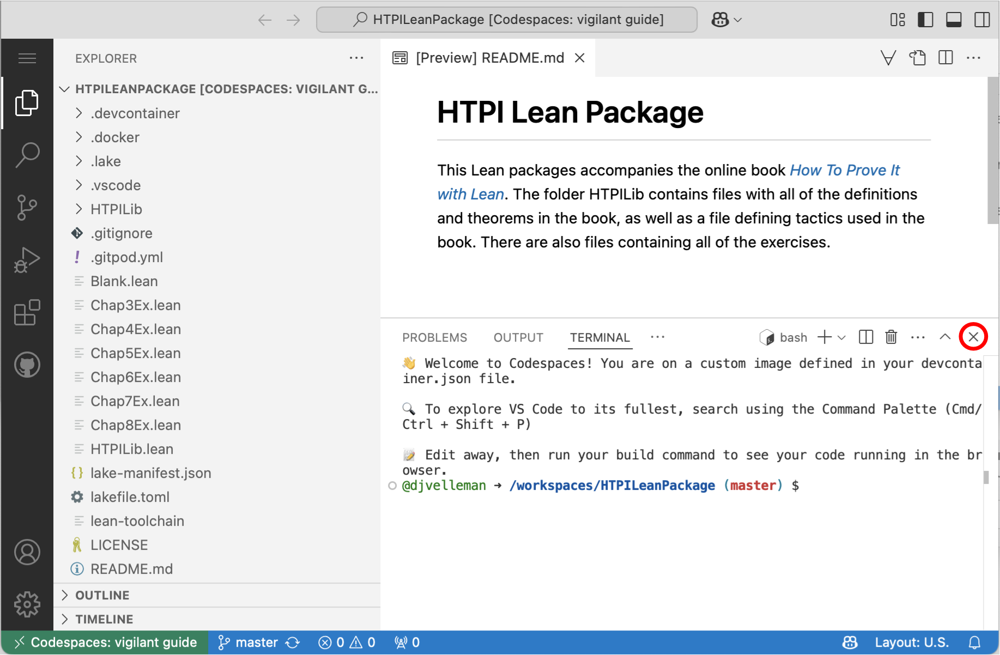

How To Prove It with Lean
Daniel J. Velleman ![]()
Preface
About This Book
This book is intended to accompany my book How To Prove It: A Structured Approach, 3rd edition (henceforth called HTPI), which is published by Cambridge University Press. Although this book is self-contained, we will sometimes have occasion to refer to passages in HTPI, so this book will be easiest to understand if you have a copy of HTPI available to you.
HTPI explains a systematic approach to constructing mathematical proofs. The purpose of this book is to show you how to use a computer software package called Lean to help you master the techniques presented in HTPI. Lean is free software that is available for Windows, MacOS, and Unix computers. It is also possible to run Lean in a web browser using GitHub Codespaces. We will explain below how to set up Lean on your computer; in a later chapter we’ll explain how to get started using Lean.
The chapters and sections of this book are numbered to match the sections of HTPI to which they correspond. The first two chapters of HTPI cover preliminary topics in elementary logic and set theory that are needed to understand the proof techniques presented in later chapters. We assume that you are already familiar with that material (if not, go read those chapters in HTPI!), so Chapters 1 and 2 of this book will just briefly summarize the most important points. Those chapters are followed by an introduction to Lean that explains the basics of using Lean to write proofs. The presentation of proof techniques in HTPI begins in earnest in Chapter 3, so that is where we will begin to discuss how Lean can be used to master those techniques.
If you are reading this book online, then at the end of the title in the left margin you will find an icon that is a link to a pdf version of the book. Below that is a search box, which you can use to search for any word or phrase anywhere in the book. Below the search box is a list of the chapters of the book. Click on any chapter to go to that chapter. Within each chapter, a table of contents in the right margin lists the sections in that chapter. Again, you can go to any section by clicking on it. At the end of each chapter there are links to take you to the next or previous chapter.
About Lean
Lean is a kind of software package called a proof assistant. What that means is that Lean can help you to write proofs. As we will see over the course of this book, there are several ways in which Lean can be helpful. First of all, if you type a proof into Lean, then Lean can check the correctness of the proof and point out errors. As you are typing a proof into Lean, it will keep track of what has been accomplished so far in the proof and what remains to be done to finish the proof, and it will display that information for you. That can keep you moving in the right direction as you are figuring out a proof. And sometimes Lean can fill in small details of the proof for you.
Of course, to make this possible, you must type your proof in a format that Lean understands. Much of this book will be taken up with explaining how to write a proof so that Lean will understand it.
Note that this book uses a customized version of Lean. The customization is designed to make Lean proofs more readable and to bring Lean into closer agreement with HTPI. The appendix of this book includes advice about transitioning from the Lean in this book to standard Lean.
Setting Up The HTPI Lean Package
This book comes with a Lean “package” (or “project”), which is a folder containing a collection of files to be used with Lean. We will be using a software package called Visual Studio Code (VS Code) to access the files in the HTPI Lean Package. There are two ways to do this: by using GitHub Codespaces, or by installing Lean on your computer.
Using GitHub Codespaces
The easiest way to get started with Lean is to use GitHub Codespaces in your web browser. To open the HTPI Lean Package in Codespaces, click here.
You will be prompted to create a GitHub account if you don’t already have one; a free account gives you 120 hours of use per month. Then you will be given various options for the creation of your codespace; you can use the default options. Click on the green “Create codespace” button. It will take several minutes to create your codespace, but this only needs to be done once; be patient. When that process is complete, you should see a window that looks something like this:

This image shows a version of VS Code, running in your codespace. You can access the menus for VS Code by clicking on the “\(\equiv\)” symbol at the top of the left sidebar. To the right of this sidebar, under the heading “Explorer,” you will see a list of the files and folders in the HTPI Lean Package. You can now click on the “X” on the right side of the lower part of the window (circled in red above) to close the terminal pane, since we won’t be using that pane.
Installing Lean
If you prefer to run Lean on your computer, you can find instructions for installing Lean here. These instructions will lead you through installing VS Code, installing the Lean 4 extension in VS Code, and then opening the Lean 4 setup guide. The setup guide will then tell you how to install Lean dependencies and the Lean version manager. There is no need to consult the recommended books and documentation at this time—this book will tell you everything you need to know to use Lean with HTPI. (But later, if you want to learn more about Lean, you may find those resources useful.) And there is no need to follow the instructions for setting up a Lean project, because you will be using the HTPI Lean package.
You can download the HTPI Lean Package from https://github.com/djvelleman/HTPILeanPackage. After following the link, click on the green “Code” button and, in the pop-up menu, select “Download ZIP”. Once the zip file has been downloaded, extract the contents of the file into a folder. You can put this folder wherever you want on your computer.
Next, in VS Code, select “Open Folder …” from the File menu and open the folder containing the HTPI Lean Package that you downloaded. (If VS Code asks if you want to open the package in a “container”, it is probably best to say no.) Under the heading “Explorer” on the left side of the window, you should see a list of the files in the package. (If you don’t see the list, try clicking on the Explorer icon at the top of the left sidebar; it looks like this: .) Your screen should look similar to the image above in the section about using GitHub Codespaces. Click on the file “Blank.lean” in the file list. Then click on the “\(\forall\)” icon, and in the pop-up menu select “Project Actions … > Project: Build Project”. Lean should “build” the HTPI Lean Package. You’ll see a number of messages, including some warnings that you can ignore. Eventually you should see the message “Project built successfully.” Your installation is now complete.
VS Code and The HTPI Lean Package
When you view the HTPI Lean Package in VS Code, you will see a list of the files and folders in the package under the “Explorer” heading. The folders are listed first, with a “\(>\)” symbol in front of each; click on a folder to see the files inside it.
You won’t need to use most of the files in the package. In the chapter “Introduction to Lean,” you will learn how to edit the file “Blank.lean” to write your first proofs. The files “Chap3Ex.lean” through “Chap8Ex.lean” contain all of the exercises; you will enter your solutions to the exercises in those files. In the exercise file for a chapter, all Lean definitions and theorems from that chapter and all earlier chapters are available for use in solving the exercises.
The only other files that you may need to look at are in the HTPILib folder. That folder includes files containing all Lean definitions and theorems in all the chapters, starting with “Introduction to Lean.” There is also a file in that folder that defines the customization mentioned earlier. All of these files are needed to make the package work. Do not edit the files in the HTPILib folder.
Since you won’t be using the HTPI Lean Package right away, you can close it for now. If you opened it in GitHub Codespaces, then you can close the browser tab or window containing your codespace. GitHub will have given your codespace a whimsical name and saved it for you. When you are ready to start using Lean, you can return to your codespace from the GitHub Codespaces page at https://github.com/codespaces. If you installed VS Code and Lean on your computer, then you can quit VS Code and open it again when you are ready to start using Lean.
License
This book is licensed under a Creative Commons Attribution-ShareAlike 4.0 International License. This license allows you to share or adapt the book. In any adaptation, you must identify Daniel J. Velleman as the author, and you must also acknowledge that excerpts from How To Prove It, 3rd edition, copyright Daniel J. Velleman 2019, published by Cambridge University Press, are reprinted with the permission of Cambridge University Press. Each such excerpt is identified in this book with a parenthetical note “(HTPI p. …)” specifying the page of How To Prove It, 3rd edition from which the excerpt is taken. For further details, see the text of the license.
Acknowledgments
A number of people have provided advice, encouragement, and feedback about this project. In particular, I would like to thank Jeremy Avigad, Clayton Cafiero, Nathan Carter, François Dorais, Charles Hoskinson, Heather Macbeth, Pietro Monticone, and Ketil Wright.